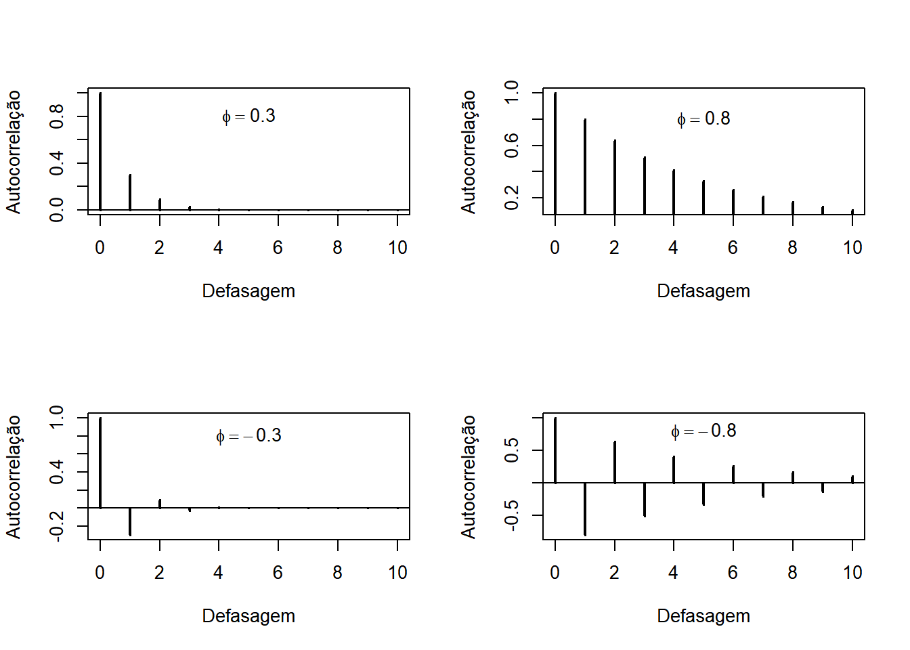
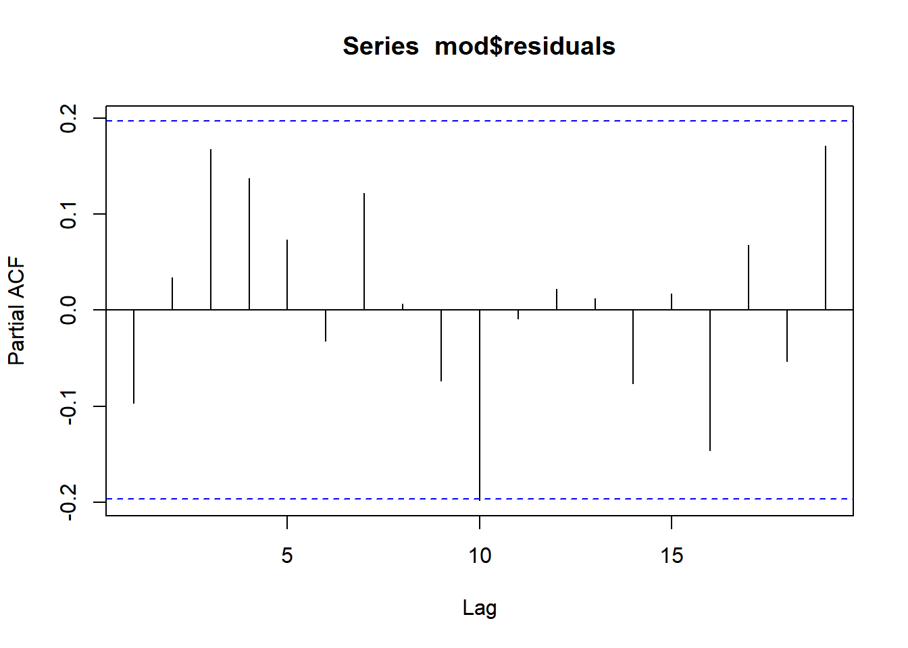

10 Modelos ARMA
10.1 O polinômio de defasagens
Definition 10.1 Considere uma sequência \(\{a_t\}\). O operador defasagem é definido como \(Ba_t = a_{t-1}\). Em inglês este operador é conhecido como backshift.
Example 10.1 Considere a série \(11,6,3,7,15,8\).
\[\begin{align*} Ba_2 &= a_{1}=11\\ B a_6& =a_5 =15 \end{align*}\] \(\blacksquare\)
Seguem algumas propriedades fundamentais do operador defasagem
- \(Bc=c\)
- \(B^k a_t=a_{t-k}\).
- \(B(c+ba_{t-1})=c+bBa_t\) (operador linear)
- \((B^m - B^n)a_t = a_{t-m}-a_{t-n}.\)
- \(B^{-1}a_t = a_{t+1}\)
Note que o operador \(B^{-1}\) leva \(a_t\) para um passo a frente (como em uma previsão). É comum encontrar a definição \(F=B^{-1}\), onde a letra \(F\) é escolhida por causa do termo (previsão).
Example 10.2 Seja \(B\) o operado defasagem. Então, definimos um polinômio de defasagens como \[\psi(B)=a_0+a_1B+\cdots+a_n B^n.\]
Note que \(\psi(B)\) é um modo sucinto para escrever \[a(B)x_t=a_0x_t+a_1x_{t-1}+\cdots+a_n x_{t-n}.\]
O polinômio de defasagens pode ser operado como um polinômio regular. Por exemplo, se \(a(B)=1-aB\) e \(b(B)=1-bB\), fazer \[\begin{align} a(B)b(B)x_t&=a(B)[(1-bB)x_t]=a(B)(x_t-bx_{t-1})\\ &=a(B)x_t-ba(B)x_{t-1}=(1-aB)x_t-b(1-aB)x_{t-1}\\ &=x_t-(a+b)x_{t-1}+abx_{t-2}\end{align}\] é equivalente a encontrar \[c(B)=(1-aB)(1-bB)=1-(a+b)B + abB^2\] e calcular \[c(B)x_t=x_t-(a+b)x_{t-1}+abx_{t-2}.\]
Dizemos que o polinômio de defasagens \(\psi(B)\) possui inversa se existe uma função \(\psi^{-1}(B)\) tal que \(\psi(B)\psi^{-1}(B)x_t=x_t\).
Example 10.3 Para entender corretamente os modelos que serão propostos, é fundamental entender o que é a inversa do polinômio de defasagens. O caso mais importante, que será a chave para os demais, é o baseado no seguinte polinômio: \[\psi(B)=1-\phi B.\]
Suponha que \[y_t=(1-\phi B)x_t=x_t-\phi x_{t-1 }\] Estamos procurando que qual situação existe \(\psi^{-1}(B)\) tal que \[x_t=\psi^{-1}(B)y_t.\] Como \[y_{t-1}=(1-\phi B)x_{t-1}=x_{t-1}-\phi x_{t-2},\] teremos que \[y_t=x_t-\phi[y_{t-1}-\phi x_{t-2}]=x_t-\phi y_{t-1}-\phi^2x_{t-2}.\] Note que podemos continuar iterando as equações acima, obtendo \[y_t=x_t-\sum_{j=1}^{t-1} \phi^jy_{t-j}-\phi^{t}x_0.\] Assuma que \(|\phi|<1\) e que \(t\) é grande, o que implica que \(\phi^t x_0\) é despresível. Então \[y_t=x_t-\sum_{j=1}^{t-1}\phi^j y_{t-j}=x_t-\sum_{j=1}^{t-1}\phi^j B^j y_t\] ou ainda \[\left(1-\sum_{j=1}^{t-1}\phi^j B^j\right)y_t=x_t\] Agora, multiplique os dois lados da equação acima por \(1-\phi B\). Então \[(1-\phi B)\left(1-\sum_{j=1}^{t-1}\phi^j B^j\right)y_t=(1-\phi B)x_t=y_t \] Deste modo, \[\psi^{-1}(B)=\lim_{t\rightarrow \infty }\left(1-\sum_{j=1}^{t}\phi^j B^j\right)=1-\sum_{j=1}^{\infty}\phi^j B^j\]
\(\blacksquare\)
No exemplo anterior, o fato de \(|\phi|<1\) garante que a inveresa do polinômio de defasagens existem uma vez que \(\lim_{t\rightarrow\infty}\sum_{j=1}^t \phi^jB^j\) é convergente.
O resultado geral é baseado no seguinte teorema.
Proposition 10.1 Seja \(T\) uma matriz quadrada qualquer e seja \[S_n=\sum_{j=1}^n T^j.\] A série \(S_n\) converge quando \(n\rightarrow\infty\) se e somente se todos os autovalores de \(T\) são menores que um em módulo. Nesse caso, \(T^j\rightarrow \textbf{0}\) quando \(j\rightarrow\infty\) e \[S_n\rightarrow (1-T)^{-1}.\]
A proposição acima é a chave para demonstrar o seguite teorema
Theorem 10.1 Seja \[y_t=x_t-\sum_{j=1}^p\phi_jx_{t-j}=\left(1-\sum_{j=1}^p\phi_jB^j\right)x_t=\phi(B).\] Então, existe \(\phi^{-1}(B)\) se e somente se o módulo das raízes de \(\phi(B)\) são maiores que um.
Proof. Faremos a demonstração para o caso \(p=2\), mas os mesmos passos podem ser seguidos para demonstrar o caso geral.
Seja \[y_t=x_t-\phi_1x_{t-1}-\phi_2 x_{t-2}=(1-\phi_1B-\phi_2 B^2)x_t.\] Comecemos notando que
\[\left(\begin{array}{c} x_t \\ x_{t-1}\end{array}\right)=\left(\begin{array}{c} y_t \\ 0\end{array}\right)+\left(\begin{array}{cc} \phi_1 & \phi_2 \\ 1 & 0\end{array}\right)\left(\begin{array}{c} x_{t-1} \\ x_{t-2}\end{array}\right)\] Fazendo \(z_t=(x_t\;\;x_{t-1})\), teremos \[z_t=\left(\begin{array}{c} y_t \\ 0\end{array}\right)+\underbrace{\left(\begin{array}{cc} \phi_1 & \phi_2 \\ 1 & 0\end{array}\right)}_{A}z_{t-1}.\] Utilizando essa relação recursiva, teremos \[z_t=A^t z_{0}+\sum_{j=0}^{t-1}A^j\left(\begin{array}{c} y_{t-j} \\ 0\end{array}\right)\] e, notando que \(x_t=(1\;\;0)z_t\), teremos \[x_t=(1\;\;0)A^t z_{0}+(1\;\;0)\sum_{j=0}^{t-1}A^j\left(\begin{array}{c} y_{t-j} \\ 0\end{array}\right)\] Suponha que os autovalores de \(A\) são, em módulo, maiores que um. Então, pela Proposition 10.1, para \(t\) suficientemente grande, \[\begin{align}x_t&=(1\;\;0)\sum_{j=1}^\infty A^j \left(\begin{array}{c} y_{t-j} \\ 0\end{array}\right)=(1\;\;0)\sum_{j=1}^\infty A^j B^j\left(\begin{array}{c} y_{t} \\ 0\end{array}\right)\\&=\sum_{j=1}^\infty (1\;\;0)A^j B^j\left(\begin{array}{c} 1 \\ 0\end{array}\right)y_{t}=\phi^{-1}(B)y_t\end{align}\] Agora, observe que os autovalores de \(A\) são obtidos através da solução de
\[\begin{align}0=&\left|\left(\begin{array}{cc}\phi_1 & \phi_2 \\ 1 & 0\end{array}\right)-\lambda \textbf{I}\right|-\lambda(\phi_1-\lambda)-\phi_2\\&=\lambda^2-\lambda \phi_1-\phi_2\\
&=1-\frac{1}{\lambda}\phi_1-\phi_2\frac{1}{\lambda^2}\end{align}\] Fazendo \(\lambda = 1/B\), teremos que a equação acima se torna \[0=1-\frac{1}{\lambda}\phi_1-\phi_2\frac{1}{\lambda^2}\equiv 1-\phi_1 B-\phi_2B^2=\phi(B)\] logo, se o módulo das raízes de \(\phi(B)\) são maiores que um, então o módulo dos autovalores de \(A\) são menores que um e, portanto, existe \(\phi^{-1}(B)\).
10.2 O modelo autorregressivo
O modelo autorregressivo de ordem \(p\), ou \(AR(p)\), é dado por \[\begin{equation} y_t = \sum_{i=1}^{p}\phi_iy_{t-i} +\varepsilon_t \end{equation}\] onde \(\{\varepsilon_t\}\) é um ruído branco, tipicamente Normal\((0,\nu)\). Nesse modelo, a contribuição da observação \(y_{t-j}\) em \(y_t\) é dada por \(\phi_j\), que é invariante no tempo.
Utilizando o polinômio de defasagens, pode-se escrever o modelo AR(\(p\)) como \[\begin{equation} \phi(B)y_t = \varepsilon_t, \end{equation}\] onde \(\phi(B)=1-B\phi_1-\cdots \phi_p B^p\). Se o módulo das raízes desse polinômio são maiores que um, então existe \(\phi^{-1}(B)\), ou seja \[y_t=\phi^{-1}(B)\varepsilon_t=\left(\sum_{j=1}^\infty \psi_jB^j\right)\varepsilon_t\] e o processo será estacionário, com média e variância iguais à \[\begin{align}E(y_t)&=\left(\sum_{j=1}^\infty \psi_jB^j\right)E(\varepsilon_t)=0\\ Var(y_t)&=Var\left(\sum_{j=1}^\infty \psi_jB^j\varepsilon_t\right)=\nu\sum_{j=1}^\infty \psi_j^2\\ \end{align}\] e a função de auto covariância é dada por \[\begin{align} \gamma(h)&=Cov(y_t,y_{t-h})\\&=Cov\left( \left(\sum_{j=1}^\infty \psi_jB^j\right)\varepsilon_t,\left(\sum_{k=1}^\infty \psi_kB^k\right)\varepsilon_{t-h}\right)\\ &=\sum_{j=1}^\infty \sum_{k=1}^\infty \psi_j\psi_k Cov\left( \varepsilon_{t-j},\varepsilon_{t-k-h}\right)\\ &=\nu\sum_{j=1}^\infty \psi_j\psi_{j+h}\end{align} \tag{10.1}\]
Example 10.4 Considere o processo \(AR(1)\) abaixo: \[\begin{align*} x_t(1-B\phi)&= \varepsilon_{t-1}. \end{align*}\]
Seja \(\dot{B}\) a raiz do polinômio \(1-B\phi\). Temos que \[\begin{align*} \phi(\dot{B})=0\Rightarrow 1-\phi \dot{B} =0 \Rightarrow \dot{B} =\frac{1}{\phi} \end{align*}\]
Logo, o processo AR(1) é estacionário se \[|\dot{B}|>1\Rightarrow \left|\frac{1}{\phi}\right|>1\Rightarrow |\phi|< 1\] Nesse caso, já vimos que \(\phi^{-1}(B)=1-\sum_{j=1}^\infty\phi^j B^j\). Então, pela equação (Equation 10.1), identificando \(\psi_j=\phi^j\),teremos que
\[\gamma(h)=\nu\sum_{j=1}^\infty \phi^j\phi^{j+h}=\nu\phi^h\frac{\phi^2}{1-\phi^2} \] Assim, a função de autocorrelação é dada por \[\rho(h)=\frac{\gamma(h)}{\gamma(0)}=\phi^h.\]
Note que:
Se \(\phi\in(0,1)\), então \(\rho(h)\) decai exponencialmente para zero
Se \(\in(-1,0)\), então \(\rho(h)\) decai exponencialmente para zero, mas alternando o sinal.
\(\blacksquare\)
Example 10.5 Considere que \(x_t\) é um AR(\(2\)), ou seja, \[x_t=\phi_1 x_{t-1}+\phi_2 x_{t-2}+\varepsilon_t=\phi(B)\varepsilon_t,\] onde \(\phi(B)=1-\phi_1B-\phi_2 B^2\). As raízes desse polinômio são \[\dot{B}=\frac{1}{2\phi_2}\left[\phi_1\pm\sqrt{\phi_1^2+4\phi_2}\right]\] e, considerando que \(|\dot{B}|>1\), o processo será estacionário se \((\phi_1,\phi_2)\) pertence ao triângulo delimitado pelos vértices (-2,-1), (0,1), (2,-1). É interessante notarmos que, se \(\phi_2<0\), é possível que as raízes de \(\phi(B)\) sejam um par de números complexos conjugados.
\(\blacksquare\)
10.2.1 Função de autocorrelação para o \(AR(p)\)
Consideremos o processo \[x_t = \sum_{j=1}^p\phi_j x_{t-j}+\varepsilon_t.\] e suponha que ele é estacionário. Multiplicando ambos os lados por \(x_{t-h}\) e aplicando a esperança, teremos \[\begin{align} E(x_{t-h}x_t)&=\sum_{j=1}^p \phi_j E(x_{t-h}x_{ t-j}) \end{align}\] e, como \(\gamma(h)=E(x_t x_{t-h})\), teremos \[\begin{align} \gamma(h)&=\sum_{j=1}^p \phi_j \gamma(h-j) \end{align} \tag{10.2}\] Dividindo ambos os lados por \(\gamma(0)\), teremos \[\begin{align} \rho(h)&=\sum_{j=1}^p \phi_j \rho(h-j) \end{align}\] Essa relação pode ser utilizada para encontrar a função de autocorrelação do processo sem a necessidade de encontrar a inversa de \(\phi(B)\).
Example 10.6 Considere o processo \(AR(2)\) abaixo: \[x_{t}=\phi_1y_{t-1}+\phi_2y_{t-2}+\varepsilon_t.\] Multiplicando a equação acima por \(x_{t-1}\) em ambos os lados teremos \[x_{t}x_{t-1}=\phi_1x_{t-1}^2+\phi_2x_{t-2}x_{t-1}+\varepsilon_t x_{t-1}.\] Calculando o valor esperado, temos \[\begin{align*} \gamma(1)&=\phi_1E(x_{t-1}^2)+\phi_2E(x_{t-2}x_{t-1})+E(\varepsilon_t x_{t-1})\\ &=\phi_1\gamma(0) + \phi_2\gamma(1). \end{align*}\] Dividindo ambos os lados por \(\gamma(0)\) teremos \[\rho(1)=\phi_1+\phi_2\rho(1),\] logo, \[\rho(1)=\frac{\phi_1}{1-\phi_2} \]
De modo análogo, teremos \[x_{t-2} x_{t}=x_{t-2}\left(\phi_1x_{t-1}+\phi_2x_{t-2}+\varepsilon_{t}\right).\] Aplicando a esperança, teremos \[\begin{align*}
\gamma(2)&=\phi_1 \gamma(1)+\phi_2\gamma(0).
\end{align*}\] e dividindo os dois lados por \(\gamma(0)\) teremos
\[\rho(2)=\phi_1\rho(1)+\phi_2=\frac{\phi_1^2}{1-\phi_2}+\phi_2\] Com os valores de \(\rho(1)\) e \(\rho(2)\), podemos encontrar \(\rho(3)\):
\[\rho(3)=\phi_1\rho(2)+\phi_2\rho(1)\] e assim sucessivamente.
\(\blacksquare\)
Em geral, a função de autocorrelação do processo AR(\(p\)) pode ser escrita como
\[\rho(h)=\sum_{j=1}^p c_j\left(\frac{1}{\dot{B}_j}\right)^h\] onde \(\dot{B}\), novamente, é a raiz de \(\phi(B)=1-\sum_{j=1}^p \phi_j B^j\).
O comportamento da função de autocorrelação depende das raízes de \(\phi(B)\).
As raízes reais se comportam de acordo com o que já foi visto no \(AR(1)\), decaindo exponencialmente.
As raízes complexas tem um comportamento de onda abafada exponencialmente.
Example 10.7 Vamos mostrar esse resultado para o caso \(p=2\) (o caso geral é análogo). Teremos que
\[\begin{align} \left(\begin{array}{c}\rho(h)\\ \rho(h-1)\end{array}\right)=\underbrace{\left(\begin{array}{cc}\phi_1 & \phi_2 \\ 1 & 0 \end{array}\right)}_{T}\left(\begin{array}{c}\rho(h-1)\\ \rho(h-2)\end{array}\right)=\cdots T^h\left(\begin{array}{c}\rho(0)\\ \rho(-1)\end{array}\right)\end{align}\]
Já discutimos, na primeira seção, que os autovalores de \(T\) são equivalentes aos recíprocos das raizes de \(\phi(B)\). Agora, considere a decomposição de \(T\) na forma canônica \[T=Q\Lambda Q^{-1},\] onde \(Q\) é a matriz cujas colunas são formadas pelos autovetores de \(T\) e \(\Lambda\) é uma matriz diagonal formada pelos autovalores. Note que
\[A^2=Q\Lambda Q^{-1}Q\Lambda Q^{-1}=Q\Lambda^2 Q^{-1}\] e, de modo análogo, \[A^h=Q\Lambda Q^{-1}Q\Lambda Q^{-1}=Q\Lambda^h Q^{-1}\] Como \(\Lambda^h\) é a matriz diagonal com os autovalores elevados à potência \(h\), os elementos de \(A^h\) devem ser necessariamente do tipo \(\sum_{j=1}^2 c_j \lambda_j^h\).
O polinômio característico da matriz \(T\) é \[\lambda^2-\phi_1\lambda-\phi_2\] e, denominando suas raizes por \(\lambda_1\) e \(\lambda_2\), teremos \[\rho(h)=c_1\lambda_1^h+c_2\lambda_2^h.\] - Se \(\lambda_1\) é real então \(\lambda_2\) também é real e o decaimento de \(\rho(h)\) será exponencial, podendo alternar o sinal se algum dos autovalores for negativo.
- Se \(\lambda_1\) é complexo, então \(\lambda_2\) será seu conjugado. Em coordenadas polares, teremos \(\lambda_1=re^{i\omega}\) e \(\lambda_2=re^{-i\omega}\). Deste modo, \[\begin{align}\rho(h)&=r^h [c_1e^{ih\omega}+c_2e^{-ih\omega}]\\&=r^h[(c_1+c_2)\cos(h\omega)+i(c_1-c_2)\sin(h\omega)]\end{align}\] logo, \(\rho(h)\) terá um comportamento de onda com a amplitude decrescendo exponencialmente. A próxima figura mostra esse efeito.
\(\blacksquare\)
10.2.2 A função de autocorrelação parcial (PACF)
Inicialmente, considere a regressão \[\hat{x}_t=\sum_{j=1}^p \beta_j x_{j-j}.\]
onde \(\beta\) é o valor de minimiza \[E(x_t-\hat{x}_t)^2=E\left(x_t-\sum_{j=1}^p \beta_jx_{t-j}\right)^2. \tag{10.3}\] Para calcular \(\phi_{hh}\) devemos minimizar \[\begin{align}E(x_{t+h}-\hat{x}_{t+h})^2&=\gamma(0)+\sum_{j=1}^p\sum_{k=1}^p\beta_j\beta_k \gamma(j-k)-2\sum_{j=1}^p\beta_j\gamma(j)\end{align}\] e, encontrando o ponto crítico após derivar em \(\beta\), concluímos que o valor de \(\beta\) que minimiza (Equation 10.3) satisfaz. \[\gamma(j)=\sum_{k=1}^p \beta_k\gamma(j-k).\] Contudo, comparando a equação acima com a identidade dada na Equation 10.2, temos que \(\beta_k=\phi_k,\) ou seja,
\[\hat{x}_t=\sum_{j=1}^p\phi_jx_{t-j}.\] É interessante notarmos que chegaremos ao mesmo resultado de definirmos \[\hat{x}_t=\sum_{j=1}^p \phi_j x_{t+j}.\] Vamos alternar entre essas duas formas de acordo com a conveniência.
Definition 10.2 A função de autocorrelação parcial, denotada por \(\phi_{hh}\) é \[\phi_{11}=\hbox{corr}(x_{t+1},x_t),\] e, para \(h\geq 2\), \[\phi_{hh}=\hbox{corr}(x_{t+h}-\hat{x}_{t+h},x_t-\hat{x}_t ).\] Além disso, se \(x_t\) é um processo gaussiano, então \[\phi_{hh}=\hbox{corr}(x_{t+h},x_t|x_{t+1},\ldots,x_{t+h-1}).\] \(\blacksquare\)
Intuitivamente, a função de autocorrelação parcial calcula a correlação entre \(x_t\) e \(x_{t+h}\) eliminando a dependência linear entre os valores intermediários \(x_s\), \(t<s<t+h\).
Example 10.8 Considere o processo AR(1) estacionário. Como \(\gamma(h)=\phi^2\), é imediato, pela definição, que \(\phi_{11}=\gamma(1)/\gamma(0)=\phi\).
Para \(h\geq 2\), vamos definir \(\hat{x}_{t+h}=\phi x_{t+h-1}\) e \(\hat{x}_t=\phi x_{t+1}\). Então, \[\begin{align}\phi_{hh}&=Cov( x_{t+h}-\hat{x}_{t+h},x_t-\hat{x}_t)\\&=Cov( x_{t+h}-\phi x_{t+h-1},x_t-\phi x_{t+1})\\&= \gamma(h)-\phi\gamma(h-1)-\phi\gamma(h-1)+\phi^2\gamma(h-2)\\ \end{align}\] Pela Equation 10.2, \[\begin{align}\gamma(h)&=\phi \gamma(h-1)\\ \gamma(h-1)&=\phi\gamma(h-2) \end{align}\] logo, \(\phi_{hh}=0\) para todo \(h\geq 2\)
\(\blacksquare\)
Example 10.9 Considere o processo AR(2) estacionário. Para \(h=2\), defina \[\begin{align}\hat{x}_{t+2}&=\phi_1 x_{t+1}+\phi_2 x_{t}\\ \hat{x}_t&=\phi_1 x_{t+1}+\phi_2 x_{t+2}\end{align}\] Então \[\begin{align}\phi_{22}&=Cov(x_{t+2}-\hat{x}_{t+2}, x_t-\hat{x}_t)\\&=Cov(x_{t+2}-\phi_1 x_{t+1}-\phi_2 x_{t},x_t-\phi_1 x_{t+1}-\phi_2 x_{t+2})\\ &=Cov(\varepsilon_{t+2},x_t-\phi_1 x_{t+1} - \phi_2 x_{t+2})\\&=-\phi_2Cov(\varepsilon_{t+2},x_{t+2})\end{align}\]
Por último, para qualquer \(h>2\), \[\begin{align}\phi_{hh}&=Cov(x_{t+h}-\hat{x}_{t+h}, x_t-\hat{x}_t)\\&=Cov(x_{t+h}-\phi_1 x_{t+h-1}-\phi_2 x_{t+h-2},x_t-\phi_1 x_{t+1}-\phi_2 x_{t+2})\\ &=Cov(\varepsilon_{t+2},x_t-\phi_1 x_{t+1} - \phi_2 x_{t+h})\\&=0\end{align}\]
\(\blacksquare\)
Seja \(x_t\) um processo AR(\(p\)) estacionário. Faça, \[\begin{align}\hat{x}_{t+h}&=\sum_{j=1}^p \phi_j x_{t+h-j}\\ \hat{x}_t&=\sum_{j=1}^p \phi_j x_{t+j}\end{align}\]
Então,
\[\begin{align}\phi_{hh}&=Cov(x_{t+h}-\hat{x}_{t+h},x_t-\hat{x}_{t})\\ &=Cov\left(x_{t+h}-\sum_{j=1}^p\phi_j x_{t+h-j},x_{t}-\sum_{j=1}^p\phi_j x_{t-j} \right)\\ &=Cov\left(\varepsilon_{t+h},x_{t}-\sum_{j=1}^p\phi_j x_{t-j} \right)\\ &=\sum_{j=1}^p \phi_j Cov\left(\varepsilon_{t+h}, x_{t-j} \right)\\ \end{align}\] logo, \(\phi_{hh}\) é nulo sempre que \(h>j\).
Definition 10.3 Gráfico da autocorrelação parcial
O gráfico da função de autocorrelação parcial é construído a partir dos pares \((h,\phi_{hh})\), para \(h=1,2,\ldots\). \(\blakcsquare\)
No exemplo abaixo, uma amostra de tamanho 100 foi gerada de um processo AR(2) estacionário e o gráfico da função de autocorrelação parcial gerado. Note que há apenas duas autocorrelações significativas, levantando evidências de que a ordem do modelo autoregressivo é 2.
set.seed(1)
x = c(0,0)
for(i in 3:100) x[i] = x[i-1] -.8*x[i-2]+rnorm(1,0,.1)
pacf(x, xlab = 'Defasagem', ylab = 'Autocorrelação parcial', main = '', lwd = 2)10.2.3 Método de estimação de Yule-Walker
O método de estimação de Yule-Walker para estimar os parâmetros do modelo AR(\(p\)) consiste na aplicação do método dos momentos. Sua principal vantagem é a ausência de suposição sobre a distribuição dos erros do modelo, exigindo apenas a condição de estacionaridade.
Para o processo \(AR(p)\) estacionário, sabemos que \[\gamma(h) = \sum_{j=1}^p \phi_j \gamma( h-j).\] Considere a equações do modelo AR(\(p\)): \[x_t = \sum_{j=1}^p \phi_j x_{t-j}+\varepsilon_t.\] Podemos multiplicar ambos os lados por \(x_t\) (ou seja \(x_{t-h}\), com \(h=0\)). Após aplicar a esperança teremos \[E(x_t^2) = \sum_{j=1}^p \phi_j E(x_{t-j}x_{t})+E(\varepsilon_tx_{t}).\] Aqui há um detalhe importante:
\[E(\varepsilon_tx_{t})=E\left(\varepsilon_t\left[\sum_{j=1}^p \phi_j x_{t-j}+\varepsilon_t\right]\right)=E(\varepsilon_t^2)=\nu\] Portanto, \[\begin{align}
\gamma(h)=\left\{\begin{array}{ll}
\sum_{j=1}^p \phi_j \gamma( h-j),&\;\;\hbox{se }h>0\\
\sum_{j=1}^p \phi_j \gamma( j)+\nu,&\;\;\hbox{se }h=0 \\
\end{array}\right.
\end{align}\]
O método de estimação de Yule-Walker consiste em substituir \(\gamma(1),\ldots,\gamma(p)\) pelas autocovariâncias amostrais: \[\begin{align*} \hat{\gamma}(1) &= \phi_1\hat{\gamma}(0) + \phi_1\hat{\gamma}(-1) + \cdots + \phi_p\hat{\gamma}(1-p) \\ \hat{\gamma}(2) &= \phi_1\hat{\gamma}(1) + \phi_1\hat{\gamma}(0) + \cdots + \phi_p\hat{\gamma}(2-p) \\ \vdots &= \vdots \\ \hat{\gamma}(p) &= \phi_1\hat{\gamma}(p-1) + \phi_1\hat{\gamma}(p-2) + \cdots + \phi_p\hat{\gamma}(0) \end{align*}\] Nota: lembre-se que \(\gamma(-i)=\gamma(i)\). Podemos escrever o sistema na forma matricial: \[\begin{align*} \underbrace{\left( \begin{array}{cccc} \hat{\gamma}(0) & \hat{\gamma}(-1) & \cdots & \hat{\gamma}(1-p) \\ \hat{\gamma}(1) & \hat{\gamma}(0) & \cdots & \hat{\gamma}(2-p) \\ \vdots & \vdots & \ddots & \vdots\\ \hat{\gamma}(p-1) & \hat{\gamma}(p-2) & \cdots & \hat{\gamma}(0) \end{array}\right)}_{\hat{\boldsymbol{\Gamma}}} \underbrace{\left( \begin{array}{c} \hat{\phi}_1 \\ \hat{\phi}_2 \\ \vdots \\ \hat{\phi}_p \end{array}\right)}_{\hat{\boldsymbol{\phi}}}= \underbrace{\left( \begin{array}{c} \hat{\gamma}(1) \\ \hat{\gamma}(2) \\ \vdots \\ \hat{\gamma}(p) \end{array}\right)}_{\hat{\boldsymbol{\gamma}}}. \end{align*}\] e os estimadores de Yule-Walker para os parâmetros autoregressivos são dados por \[\hat{\boldsymbol{\phi}}=\hat{\boldsymbol{\Gamma}}^{-1}\hat{\boldsymbol{\gamma}}.\]
Voltando para a Equação (\(\ref{eq:autocovarianca-AR}\)), temos que \[\gamma(0)=\sum_{j=1}^{p}\phi_j \gamma(j)+\nu\] Portanto, um estimador para \(\nu\) é dado por \[\hat{\nu}= \hat{\gamma(0)}=\sum_{j=1}^{p}\hat{\phi_j}\hat{\gamma(j)}\]
10.2.4 Estimador de máxima verossimilhança
Observe que \[x_t|\mathcal{D}_{t-1}\sim x_t|x_{t-1},\ldots,x_{t-p}\] ou seja, \(\{x_t\}\) é uma cadeia de Markov de ordem \(p\). Deste modo, para \(n>p\), \[\begin{align*} f(x_{1},\ldots,x_n)&=f\left(x_n|\mathcal{D}_{n-1}\right)f\left(\mathcal{D}_{n-1}\right)=f\left(x_T|x_{n-1},\ldots,x_{n-p}\right)f\left(\mathcal{D}_{n-1}\right)\\ &=\prod_{t=p+1}^{n}f\left(x_t|x_{t-1},\ldots,x_{t-p}\right) f(x_{1},\ldots,x_p). \end{align*}\] Agora, suponha que \(\varepsilon_t\sim\hbox{Normal}(0,\nu)\). Então, \[\begin{align*} L(\phi_1,\ldots,\phi_p,\nu)&=\left(\frac{1}{2\pi\nu}\right)^{\frac{n}{2}}\exp\left\{-\frac{1}{2\nu}\sum_{t=p+1}^n(x_t-\sum_{j=1}^p \phi_jx_{t-j})^2\right\}\\&\times f(x_{1},\ldots,x_p|\phi_1,\ldots,\phi_p,\nu). \end{align*}\]
O método da maxima verossimilhança condicional consiste em ignorar o termo \(f(x_{1},\ldots,x_p|\phi_1,\ldots,\phi_p,\nu)\). Com isso, o restante da função de verossimilhança pode ser escrito como um modelo linear, uma vez que
\[x_t=\sum_{j=1}^p \phi_jx_{t-j}+\varepsilon_t=\underbrace{(x_{t-1}\;\;\cdots \;\;x_{t-p})}_{F_t'}\underbrace{\left(\begin{array}{c}\phi_1 \\ \vdots \\ \phi_p\end{array}\right)}_{\beta}\] e \(\hat{\beta}\) e \(\hat{\nu}\) podem ser obtidos pelos estimadores já discutidos na seção sobre modelos lineares.
Já para o método da máxima verossimilhança, precisamos especificar a distribuição do termo adicional \(f(x_1,\ldots,x_p|\phi_1,\ldots,\phi_p)\). Desde que o processo seja estacionário, é possível mostrar que \[x_1,\ldots,x_p\sim\hbox{Normal}(\textbf{0}_p,\Sigma(\phi_1,\ldots,\phi_p))\] onde \(\Sigma(\phi_1,\ldots,\phi_p))\) é a matriz formada pelas autocovariâncias.
A maximização da função de verossimilhança é feita numericamente e pode-se utilizar as estimativas obtidas no método da máxima verossimilhança condicional como ponto de partida para o algoritmo de maximização.
10.2.5 Previsão
Considere a amostra \(\mathcal{D}_t\) do modelo AR(1). Então,
\[\begin{align}x_{t+h}&=\phi x_{t+h-1}+\varepsilon_{t+h}\\ &=\phi^2x_{t+h-2}+\phi\varepsilon_{t+h-1}+\varepsilon_{t+h}= \cdots\\&=\phi^h x_t+\sum_{j=0}^{h-1}\phi^j\varepsilon_{t+h-j}\end{align}\] logo \[E(x_{t+h}|\mathcal{D}_t)=\phi^h x_t\] e \[Var(x_{t+h}|\mathcal{D}_t)=\nu\sum_{j=0}^{h-1}\phi^{2j}=\nu\frac{1-\phi^{2h}}{1-\phi^2}\] Note que, se o processo é estacionário, então \(|\phi|<1\) e a previsão converge para zero exponencialmente. Na prática, tanto a previsão quanto a variância são calculadas substituíndo \(\phi\) por sua estimativa.
Para o processo AR\((p)\), seja \(z_t=(x_t,\ldots,x_{t-p+1})\). Então, \[z_t=Tz_{t-1}+\boldsymbol{\varepsilon}_t\] onde \[T=\left(\begin{array}{ccc|c}\phi_1&\cdots&\phi_{p-1} & \phi_p \\ \hline & \textbf{I}_{p-1} & & \textbf{0}_{p-1}\end{array}\right)\] e \[\boldsymbol{\varepsilon}_t=\left(\begin{array}{c}\varepsilon_t \\ \hline \textbf{0}_{p-1}\end{array}\right)\] Logo, dado \(\mathcal{D}_t\), \[z_{t+h}=T^h z_t+\sum_{j=0}^{h-1}T^j\boldsymbol{\varepsilon}_{t+h-j}\] Note que \(x_{t+h}=(1|\textbf{0}'_{p-1})z_{t+h}\), logo \[E(x_{t+h}|\mathcal{D}_t)=(1|\textbf{0}'_{p-1})T^h z_t\] e \[Var(x_{t+h}|\mathcal{D}_t)=\nu\sum_{j=0}^{h-1}\left(\begin{array}{c|c}1&\textbf{0}'_{p-1}\end{array}\right)T^j \mathcal{E} T'^j\left(\begin{array}{c}1 \\ \hline \textbf{0}_{p-1}\end{array}\right) \] onde \(\mathcal{E}\) é uma matriz com o valor 1 no elemento \(a_{11}\) e zero nos demais.
10.2.6 Processo autorregressivo com deriva
Até o momento, assumimos que o processo AR\((p)\) é estacionário com \(E(x_t)=0\). Quando \(\mu=E(x_t)\neq 0\), temos um parâmetro adicional, denominado deriva e escrito como
\[x_t-\mu=\sum_{j=1}^p \phi_j(x_{t-j}-\mu)+\varepsilon_t\]
Observe que a deriva não altera a estrutura de autocorrelação do processo, uma vez que podemos definir \(y_t=x_t-\mu\), onde \(y_t\) é um AR(\(p\)) com \(E(y_t)=0\), o que implica em \[\gamma(h)=Cov(x_t, x_{t-1})=Cov(x_t-\mu,x_{t-h}-\mu)=Cov(y_t,y_{t-h}).\]
Contudo, a função de previsão do processo deve ser ajusta. Defina \(z_t=(x_t-\mu,\ldots,x_{t-p+1}-\mu)\). Já vimos que
\[z_{t+h}=T^h z_t+\sum_{j=0}^{h-1}T^j\boldsymbol{\varepsilon}_{t+h-j}\] onde \(T\) e \(\boldsymbol{\varepsilon}_t\) foram definidos na seção anterior. Note que \(x_{t+h}-\mu=(1|\textbf{0}'_{p-1})z_{t+h}\), logo \[E(x_{t+h}|\mathcal{D}_t)=\mu+(1|\textbf{0}'_{p-1})T^h z_t\]
Em termos de estimação, a função de verossimilhança deve ser alterada para
\[\begin{align*}
L(\mu,\phi_1,\ldots,\phi_p,\nu)&=\left(\frac{1}{2\pi\nu}\right)^{\frac{n}{2}}\exp\left\{-\frac{1}{2\nu}\sum_{t=p+1}^n(x_t-\mu-\sum_{j=1}^p \phi_j(x_{t-j}-\mu)^2\right\} \\&\times f(x_{1},\ldots,x_p|\mu,\phi_1,\ldots,\phi_p,\nu).
\end{align*}\]
onde \[x_{1},\ldots,x_p\sim\hbox{Normal}(\mu\textbf{1}_p,\Sigma(\phi_1,\ldots,\phi_h))\]
10.2.7 Exemplo: número anual de terremotos
A série abaixo apresenta o número anual de terremotos de magnitude maior ou igual à 7 na escala Richter.
require(gsheet)Carregando pacotes exigidos: gsheetWarning: package 'gsheet' was built under R version 4.3.2url <- 'https://docs.google.com/spreadsheets/d/1PPf1nOjwh1fnr1VtFW2DKN6PY9s9TXEQTn6ZX3igCBQ/edit?usp=sharing'
dados <- gsheet2tbl(url)
terr <- unlist(dados[,2])
terr <- ts( terr, start = 1900)
ts.plot(terr, ylab = 'No terremotos', xlab = 'Ano', lwd= 2)Note que o processo parece ser estacionário. Vamos explorar as funções de autocorrelação nas duas figuras abaixo. O correlograma mostra um comportamento tendendo para zero após 5 defasagens enquanto que o gráfico da função de autocorrelação parcial apresenta um único valor significativo. Temos evidências o modelo AR(1) pode ser adequado.
acf(terr)pacf(terr)A função arima(x, order = c(p,0,0)) estima os parâmetros do modelo \(AR(p)\) já considerando a deriva (caso contrário, utilize o argumento include.mean=FALSE). Abaixo apresentamos o modelo ajustado.
mod <- arima( terr, c(1,0,0))
mod
Call:
arima(x = terr, order = c(1, 0, 0))
Coefficients:
ar1 intercept
0.5433 19.8907
s.e. 0.0840 1.3180
sigma^2 estimated as 36.7: log likelihood = -318.98, aic = 643.97Podemos verificar se o ajuste é adequado analisando os resíduos. Note que agora possuímos uma ferramente nova, o gráfico da função de autocorrelação parcial. Abaixo, os gráficos das funções de autocorrelação não apresentam valores significativos. O teste de Box-Pierce não rejeita a hipótese de um processo estacionário e o teste de Shapiro-Wilks não rejeita a hipótese de ruído branco gaussiano. Portano, temos evidências de que o modelo AR(1) com erros gaussianos é adequado para essa série.
acf(mod$residuals)pacf(mod$residuals)
Box.test(mod$residuals)
Box-Pierce test
data: mod$residuals
X-squared = 0.92715, df = 1, p-value = 0.3356shapiro.test(mod$residuals)
Shapiro-Wilk normality test
data: mod$residuals
W = 0.97813, p-value = 0.09826As estimativas encontradas foram \(\hat{\phi}=0,5\), \(\hat{\nu}=36,7\) e \(\hat{\mu}=19\). Podemos utilizar a função forecast do pacote de mesmo nome para fazer previsões. Note que a medida que o horizonte de previsão cresce, o modelo converge para a deriva.
require(forecast)Carregando pacotes exigidos: forecastWarning: package 'forecast' was built under R version 4.3.1Registered S3 method overwritten by 'quantmod':
method from
as.zoo.data.frame zoo prev <- forecast(mod, 10)
plot(prev)10.3 Médias móveis
O processo \[ x_t= \varepsilon_t +\sum_{j=1}^{q}\theta_j\varepsilon_{t-j},\] onde \(\{\varepsilon_t\}\) é um ruído branco, é denominado média móvel de ordem \(q\) (onde MA é a sigle de ). Note que esse modelo não está relacionado com o método de suavização de mesmo nome. Também podemos definir o modelo utilizando um polinômio de defasagens: \[\begin{align}x_t =\left(1+\sum_{j=1}^{q}\theta_jB^j\right)\varepsilon_t=\theta(B)\varepsilon_t\end{align}\]
O processo MA\((q)\) é estacionário. De fato \[E(x_t)=E\left(\varepsilon_t +\sum_{j=1}^{q}\theta_j\varepsilon_{t-j}\right)=0,\] \[Var(x_t)=\nu\left(1+\sum_{j=1}^{q}\theta_j^2\right).\] Agora, defina \(\psi_0=1\), \(\psi_j=\theta_j\), para \(j=1,\ldots,q\) e \(\psi_j=0\) para \(j>q\). Então, \[\begin{align} Cov(x_t,x_{t-h})&=\sum_{j=0}^q\sum_{k=0}^q \psi_j\psi_k Cov\left(\varepsilon_{t-j},\varepsilon_{t-k-h}\right)\\&=\nu\sum_{k=0}^{q-h} \psi_{k+h}\psi_k\\ &=\nu\left[\theta_h+\sum_{j=1}^{q-h}\theta_j\theta_{j+h}\right]\end{align}\]
A função de autocorrelação desse processo é dada por
\[\rho(h)=\left\{\begin{array}{ll}\frac{\theta_h+\sum_{j=1}^{q-h}\theta_j\theta_{j+h}}{1+\sum_{j=1}^q\theta^2_j },&\;\;0<h\leq q\\0,&\hbox{ caso contrário}\end{array}\right.\]
Portanto, o correlograma pode ser utilizado para determinar o valor que \(q\), uma vez que são esperadas \(q\) autocorrelações não nulas.
10.3.1 Inversibilidade do processo de média móvel
Nem sempre o processo \(MA(q)\) é inversível. De fato, note que \[x_t=\varepsilon_t +\theta\varepsilon_{t-1}=(1+\theta B)\varepsilon_t\Rightarrow x_t(1+\theta B)^{-1}=\varepsilon_t.\] Sabemos que \[\theta^{-1}(B)=\sum_{j=0}^{\infty}\theta^j B^j,\] quando \(|\theta|<1\). Portanto, para este processo ser inversível é necessário que \(|\theta|<1\). Observe que
\[\theta^{-1}(B)x_t=\varepsilon_t\Rightarrow x_t=\sum_{j=1}^\infty \theta^j x_{t-j}+\varepsilon_t,\] logo, a inversa do processo MA\((1)\) é equivalente ao modelo AR(\(\infty\)).
Proposition 10.2 O processo MA\((q)\) é inversível se e somente se o módulo das raízes do polinômio \(\theta(B)\) forem maiores que um. \(\blacksquare\)
10.3.2 Autocorrelação parcial do MA(\(q\))
Considere que o processo MA\((q)\) inversível. Então, sabemos que \[x_t=\sum_{j=0}^\infty\psi_j x_{t-j}+\varepsilon_t \] existe e é estacionário. Defina \[\begin{align} \hat{x}_{t+h}&=\sum_{j=1}^p\phi_j x_{t+h-j}\\ \hat{x}_{t}&=\sum_{j=1}^p\phi_j x_{t+j}\\ \end{align}\]
Então, \[\begin{align}\phi_{hh}&=Cov(x_{t+h}-\hat{x}_{t+h},x_t-\hat{x}_t)\\ &=Cov\left(x_{t+h}-\sum_{j=1}^\infty\phi_j x_{t+h-j},x_t- \sum_{j=1}^\infty\phi_j x_{t+j}\right)\\&=Cov\left(\varepsilon_{t+h},x_t- \sum_{j=1}^\infty\phi_j x_{t+j}\right)\\&=-\sum_{j=h}^\infty\psi_jCov(\varepsilon_{t+h},x_{t+j})\\&=-\sum_{j=h}^\infty\psi_jCov(\varepsilon_{t+h},x_{t+j})\end{align}\] e, como o processo é inversível, \(\phi_{hh}\) deve decair exponencialmente para zero.
Considere o processo MA(1) inversível. É possível mostrar que \[Cov(\varepsilon_t,x_{t+j})=\nu\theta^j\] Sabemos que \[x_t=\sum_{j=1}^\infty \psi_jx_{t-j}+\varepsilon_t,\] onde \(\psi_j=\theta^j\). Então, \[\begin{align}\phi_{hh}&=-\sum_{j=h}^\infty\theta^j Cov(\varepsilon_{t+h},x_{t+j})=-\sum_{j=h}^\infty\theta^{2j} \nu\end{align}\]
10.3.3 Estimação dos parâmetros do MA(\(q\))
Sabemos que \[f(x_1,\ldots,x_n)=f(x_1)\prod_{t=2}^{n}f(x_t|x_1,\ldots,x_{t-1}).\]
Considere inicialmente o modelo $MA(1)$ e considere que $\varepsilon_0$ é conhecido. Então,
$$x_1= \varepsilon_1+\theta\varepsilon_0\sim\hbox{Normal}(\theta \varepsilon_0,\nu ).$$Além disso, após observar \(x_1\), podemos escrever \[\hat{\varepsilon}_1=x_1-\theta\varepsilon_0.\] Como \[\begin{align*} x_2|\mathcal{D}_1\sim (\varepsilon_2+\theta\varepsilon_1|\varepsilon_0,x_1)\sim\varepsilon_1+\theta\hat{\varepsilon}_1\sim\hbox{Normal}(\theta\hat{\varepsilon}_1,\nu). \end{align*}\]
De um modo geral, fazendo \[\hat{\varepsilon}_t = x_t-\theta\hat{\varepsilon}_{t-1}\] teremos \[\begin{align*} (x_t|\mathcal{D}_{t-1})&\sim \hbox{Normal}(\theta \hat{\varepsilon}_{t-1},\nu) \end{align*}\] e podemos escrever a verossimilhança,
\[L(\theta,\nu,\varepsilon_0)=\left(\frac{1}{2\pi\nu}\right)^{\frac{n}{2}}\exp\left\{-\frac{1}{2\nu}\left[(x_1-\theta\varepsilon_0)^2+\sum_{t=2}^n(x_t-\theta\hat{\varepsilon}_{t-1})^2\right]\right\}\]
Para um modelo \(MA(q)\), supomos que \(\varepsilon_{-q+1},\ldots,\varepsilon_{0}\) são conhecidos. Fazendo \[\begin{equation} \hat{\varepsilon}_{t}=x_t - \sum_{j=1}^{q}\theta_j\hat{\varepsilon}_{t-j}, \end{equation}\] e
\[\begin{align} \lambda_t'=-(\hat{\varepsilon}_{t-1},\ldots,\hat{\varepsilon}_{t-q}) \end{align}\] teremos que \[x_{t}|\mathcal{D}_{t-1}\sim\hbox{Normal}\left(\lambda_t'\boldsymbol{\theta},\nu\right)\] onde \(\boldsymbol{\theta}'=(\theta_1,\ldots,\theta_q)\). Logo, \[\begin{equation} L(\boldsymbol{\theta},\nu,\varepsilon_{-q+1},\ldots,\varepsilon_0)\propto \left(\frac{1}{\nu}\right)^{\frac{n}{2}}\exp\left\{-\frac{1}{2\nu}\sum_{t=1}^n\left(y_t -\lambda_t'\boldsymbol{\theta}\right) ^ 2\right\} \end{equation}\]
Em relação aos valores \(\varepsilon_{-q+1},\ldots,\varepsilon_0\), temos duas estratégias de otimização: - Fazer \(\varepsilon_{-q+1}=\cdots=\varepsilon}_0=0\): isto é equivalente a dizer que todos estes valores são iguais à sua média. - Estimar \(\varepsilon_{-q+1},\ldots,\varepsilon_0\): isto altera o número de parâmetros para \(2q+1\). Neste caso, a estratégia anterior pode ser utilizada como valores iniciais para o otimizador.
10.4 Modelo autorregressivo com médias móveis
O modelo autorregressivo com médias móveis (ARMA) é dado por \[\begin{equation} x_t= \sum_{j=1}^p \phi_j x_{t-1} + \varepsilon_t + \sum_{k=1}^{q}\theta_k\varepsilon_{t-k}, \end{equation}\] onde \((p,q)\) são as ordens da parte autorregressiva e das médias móveis, respectivamente. Definimos \(ARMA(0,q)=MA(q)\) e, de modo análogo, definimos \(ARMA(p,0)=AR(p).\)
Utilizando o operador defasagem teremos \[\begin{align} x_t&= \sum_{j=1}^p \phi_j x_{t-1} + \varepsilon_t + \sum_{k=1}^{q}\theta_k\varepsilon_{t-k} \\ &= \sum_{j=1}^p \phi_j B^jx_{t} + \varepsilon_t + \sum_{k=1}^{q}\theta_kB^k\varepsilon_{t} \end{align}\] o que implica em \[\begin{align*} \underbrace{\left(1-\sum_{j=1}^p \phi_j B^j\right)}_{\phi(B)}x_t = \underbrace{\left(1-\sum_{j=1}^p \theta_j B^j\right)}_{\theta(B)}\varepsilon_{t} \end{align*}\]
O modelo ARMA será estacionário se o módulo das raízes de \(\phi(B)\) forem maiores que um e será inversível se o mesmo ocorrer com o módulo das raízes de \(\theta(B)\).
10.4.1 Função de autocorrelação
A função de auto covariância cruzada é dada por \[\begin{equation} \gamma_{x\varepsilon}(h)=E(\varepsilon_t x_{t-h}). \end{equation}\] Note que \(x_{t-h}\) depende apenas dos ruídos que ocorreram até o tempo \(t-h\). Portanto \[\begin{align} \gamma_{x\varepsilon}(h)=0,&\;\; h>0 \\ \gamma_{x\varepsilon}(h)\neq 0,&\;\; h\leq 0 \\ \end{align}\]
Considere o processo ARMA(1,1), dado por \[x_t = \varepsilon_{t} + \phi x_{t-1} + \theta\varepsilon_{t-1}.\]
Teremos que \[\begin{align*} \gamma_{x\varepsilon}(0)&=E(x_t\varepsilon_t) = E( \left[\varepsilon_t + \phi x_{t-1} + \theta\varepsilon_{t-1} \right]\varepsilon_t)\\ &=\underbrace{E(\varepsilon_t^2)}_{\nu}+ \phi\underbrace{ E(x_{t-1}\varepsilon_t)}_{\gamma_{x\varepsilon}(1)=0} +\theta \underbrace{E(\varepsilon_{t}\varepsilon_{t-1})}_{=0} \\ &=\nu \end{align*}\]
Agora, multiplicando a equação do modelo ARMA(1,1) em ambos os lados por \(x_{t-h}\), e aplicando a esperança teremos
\[\begin{equation} \underbrace{E(x_{t-h}x_t)}_{\gamma(h)} = \underbrace{E(x_{t-h}\varepsilon_{t})}_{\gamma_{x\varepsilon}(h)} + \phi \underbrace{E(x_{t-1}x_{t-h})}_{\gamma(h-1)} + \theta \underbrace{E(x_{t-h}\varepsilon_{t-1})}_{\gamma_{x\varepsilon}(h-1)}. \end{equation}\]
Fazendo \(h=0\) na equação acima, teremos \[\gamma(0)=\phi\gamma(1) + \theta\gamma_{x\varepsilon}(-1)\] e, como \[\gamma_{x\varepsilon}(-1)=E(x_{t+1}\varepsilon_t)=\]
Fazendo \(h=1\) teremos \[\gamma(1)=\phi\gamma(0)+\theta\nu\]
Para qualquer \(h\geq 2\),
\[\gamma(h)=\phi\gamma(h-1),\] ou ainda \[\gamma(h)=\phi^{h-1}\gamma(1)=\phi^h\gamma(0)+\theta\nu.\] Assim, \[\rho(h)=\left\{\begin{array}{ll}\end{array}\right.\]
Note que a primeira auto covariância depende do parâmetro de média móvel.
Note ainda que após a primeira defasagem, a função de auto covariância se comporta como um modelo AR(1) tradicional: com um decaimento exponencial (podendo ser alternado ou não).\end{frame}
10.5 Modelos integrados
10.5.1 O operador difereNça
Vimos no começo do curso que o passeio aleatório, dado por \[x_t=x_{t-1}+\varepsilon_t\] onde \(\varepsilon_t\) é um ruído branco, poderia gerar tendências aleatórias. Note que o passeio aleatório nada mais é que o processo AR(1) não estacionário. Podemos escrever esse modelo como \[x_t-x_{t-1}=\varepsilon_t\Rightarrow(1-B)x_t=\varepsilon_t\Rightarrow\Delta x_t=\varepsilon_t\] Acima,\(\Delta=1-B\) é denominado operador diferença. Observe que a série \[y_t=\Delta x_t=\varepsilon_t\] é um ruído branco. Desse modo, o operador elimina a tendência aleatória gerada pelo passeio.
Agora, considere que \[x_t=T(t)+\varepsilon_t,\] onde \(T(t)\) é uma tendência localmente linear com inclinção constante, ou seja, para qualquer \(s\) na vizinhança de \(t\), \[T(s)=\mu_t+b s.\] Então \[\Delta x_t= \mu_t+bt-(\mu_t+b(t-1))+\varepsilon_t=b+\varepsilon_t\] e \(y_t=\Delta x_t=b+\varepsilon_t\) será um ruído branco com deriva.
Por último, para qualquer \(s\) na vizinhança de \(t\), suponha que \[T(s)=\mu_t+b_t s.\] Nesse caso, \[\Delta x_t= b_t+\varepsilon_t\] logo, o processo \(y_t=\Detal x_t\) não é um ruído branco. Contudo, como é usual que \(b_t\approx b_{t+1}\), teremos
\[\Delta y_t= \Delta x_t - \Delta x_{t-1}=b_t-b_{t-1}+\varepsilon_t-\varepsilon_{t-1}\approx \varepsilon_t-\varepsilon_{t-1}\]
logo, aplicar o operador diferença pela segunda vez gera um ruído branco. Note que
\[\Delta y_t=\Delta (x_t-x_{t-1})=\Delta(1-B)x_t=\Delta^2 x_t.\] Então, aplicar o operador diferença algumas vezes pode eliminar a tendência da série, gerando um ruído branco.
Considere o modelo \[y_t=\Delta x_t=\varepsilon_t,\] onde \(\varepsilon_t\) é um ruído branco. Então, para \(\mathcal{D}_t=\{x_1,\ldots,x_t\}\), \[E(y_{t+h}|\mathcal{D}_t)=0\Rightarrow E(x_{t+h}|\mathcal{D}_t)=E(x_{t+h-1}|\mathcal{D}_t)\] e, como \(E(x_t|\mathcal{D}_t)=x_t\), teremos \[E(x_{t+h}|\mathcal{D}_t)=x_t.\] Portanto, esse modelo tem como previsão para qualquer horizonte o último valor observado, o que é equivalente ao modelo de suavização exponencial com \(\alpha=1\).
Considere agora o modelo \[y_t=\Delta^2 x_t=\varepsilon_t,\] onde \(\varepsilon_t\) é um ruído branco. Observe que \[E(y_{t+1}|\mathcal{D}_t)=0\Rightarrow E(x_{t+1}|\mathcal{D}_t)=x_t + (x_t-x_{t-1}).\] É simples mostrar por indução que \[E(x_{t+h}|\mathcal{D}_t)=x_t+ h(x_t-x_{t-1}),\] que é equivalente ao método de Holt com nível \(m_t=x_t\) e inclinação \(b_t=(x_t-x_{t-1})\).
\(\blacksquare\).
10.5.2 Modelo autorregressivo integrado
Considere agora uma série temporal \(x_t\) na qual foram necessárias \(d\) diferenças para eliminar a tendência. Contudo, a série \(y_t=\Delta^d x_t\) resultante é um ruído branco, mas sim um processo AR(\(p\)). Teremos
\[y_t=\sum_{j=1}^p \phi_j y_{t-j}+\varepsilon_t \Rightarrow \left(1-\sum_{j=1}^p \phi_jB^j\right)y_t=\varepsilon_t\] ou, de modo equivalente, \[\left(1-\sum_{j=1}^p \phi_jB^j\right)\Delta^d x_t=\varepsilon_t.\] O modelo acima é denominado autorregressivo integrado, e sua notação é ARI\((p,d)\), onde \(p\) é a ordem do modelo autorregressivo resultante das \(d\) diferenças da série original.
As estimativas são obtidas criando a série \(y_t=\Delta^d x_t\) e estimando os parâmetros do modelo AR(\(p\)) resultante.
A previsão do processo ARI(\(p,d\)) pode facilmente ser realizada a partir do modelo AR(\(p\)). Por exemplo, para \(y_t=\Delta x_t\),
\[\begin{align}E(y_{t+1}|\mathcal{D}_t)&=\sum_{j=1}^p \phi_j y_{t-j}\\\end{align}\] o que implica em \[\begin{align} E(x_{t+1}|\mathcal{D}_t)=x_t+\sum_{j=1}^p\phi_j(x_{t-j}-x_{t-j-1})\end{align}\]
Example 10.10 Previsão para o modelo ARI(1,1)
Seja \(x_t\) uma série temporal segundo o processo ARI(1,1). Então, \(\Delta y_t\) é um processo AR(1) e \(E(y_{t+h}|\mathcal{D}_t)=\phi^h y_t\). Disto, notemos que
\[E(x_{t+1}-x_t|\mathcal{D}_t)=\phi (x_{t}-x_{t-1})\Rightarrow E(x_{t+1}|\mathcal{D}_t)=x_t+\phi(x_t-x_{t-1}),\] e \[\begin{align}&E(x_{t+2}-x_{t+1}|\mathcal{D}_t)=\phi^2 (x_t-x_{t-1})\\&\Rightarrow E(x_{t+2}|\mathcal{D}_t)=\phi^2 (x_{t}-x_{t-1})+E(x_{t+1}|\mathcal{D}_t)\\ &\Rightarrow E(x_{t+2}|\mathcal{D}_t)=\phi^2 (x_{t}-x_{t-1})+\phi (x_{t}-x_{t-1})+x_t.\end{align}\] Por indução, é imediato que \[E(x_{t+h}|\mathcal{D}_t)=x_t+\sum_{j=1}^h \phi^{j}(x_t-x_{t-1}).\] Identificando \(x_t\) como a estimativa para nível da série no tempo \(t\) e \((x_t-x_{t-1})\) como a inclinação da tendência, temos que a função de previsão é um modleo com tendência amortecida.
\(\blacksquare\)
10.5.3 Modelo autorregressivo sazonal
Seja \[x_t = g(t)+\varepsilon_t,\] onde \(g(.)\) é uma função períodica com período \(p\) e \(\varepsilon_t\) um rúido branco. Note que \[x_t-x_{t-p}=g(t)-g(t-p)+\varepsilon_t-\varepsilon_{t-p}=\varepsilon_t-\varepsilon_{t-p},\] logo, a diferença acima gerou uma série estacionária. Observe que \[x_t-x_{t-p}=(1-B^p)x_t.\] O operador \(1-B^p\) é conhecido como diferença sazonal.
Sem perda de generalidade, assuma que \(D=3\). Então, a relação entre \(x_t\) e \(x_{t-3}\) pode ser obtida usando a seguinte transformação:
\[\left(\begin{array}{c}x_t\\ x_{t-1}\\ x_{t-2}\end{array}\right)=\left(\begin{array}{cc}0 & 0 & 1\\ 1 & 0 & 0\\ 0& 1 & 0\end{array}\right)\left(\begin{array}{c}x_{t-1}\\ x_{t-2}\\ x_{t-3}\end{array}\right)=\left(\begin{array}{cc}0 & 0 & 1\\ 1 & 0 & 0\\ 0& 1 & 0\end{array}\right)^2\left(\begin{array}{c}x_{t-4}\\ x_{t-5}\\ x_{t-6}\end{array}\right)\] A matriz acima é denominada permutação, e já foi utilizada anteriormente. Para o caso geral,
\[\left(\begin{array}{c}x_t\\ x_{t-1}\\ x_{t-2}\end{array}\right)=\left(\begin{array}{cc}0 & 0 & 1\\ 1 & 0 & 0\\ 0& 1 & 0\end{array}\right)^h\left(\begin{array}{c}x_{t-(3h-2)}\\ x_{t-(3h-1)}\\ x_{t-3h}\end{array}\right)\] ou ainda, \[x_t=\sum_{j=1}^3 c_j\lambda_j^h x_{t-(3h-j+1)},\] onde \(\lambda_j\) são os autovalores da matriz acima. Acontece que \[\left|\left(\begin{array}{cc}0 & 0 & 1\\ 1 & 0 & 0\\ 0& 1 & 0\end{array}\right)-\lambda \textbf{I}_3\right|=0\Rightarrow \lambda^3=1\] Teremos que \(\lambda=1\) é a solução real, enquanto que \[\lambda= \exp\left\{\frac{\pi }{3}i\right\}=\cos\left(\frac{2\pi }{3}\right)+i\sin\left(\frac{2\pi}{3}\right).\] e \[\lambda= \exp\left\{\frac{2\pi }{3}i\right\}=\cos\left(\frac{4\pi }{3}\right)+i\sin\left(\frac{4\pi k}{3}\right).\] são as soluções complexas.
Na prática, para qualquer período \(p\), o autovalores existirão \(p-1\) autovalores da matriz de permutação satisfazendo \[\lambda= \cos(2\pi k/p)+i\sin(2\pi k/p),\] com \(k=1,\ldots,D-1\).
Dizemos que \(x_t\) é um processo autorregressivo sazonal se \(y_t=(1-B^p)^Dx_t\) é um processo autorregressivo.
Assim como no caso do modelo integrado, os parâmetros são estimados a partir do modelo AR(\(P\)) considerando a amostra \(y_t=(1-B^{p})^Dx_t\).
A previsão é
Example 10.11 Seja \(x_t\) um processo autorregressivo sazonal, de período 12. Então,
\[(1-B^{12})x_t=\Phi(1-B^{12})x_{t-1}+\varepsilon_t,\] ou ainda, \[x_t=x_{t-12}+\Phi x_{t-1}-\Phi x_{t-13}+\varepsilon_t\]
10.6 O modelo ARMA
O modelo auto regressivo de média móvel é dado por \[ x_t= \sum_{j=1}^p \phi_j x_{t-1} + \sum_{k=1}^{q}\theta_k\varepsilon_{t-k}+ \varepsilon_t, \] onde \((p,q)\) são as ordens da parte autorregressiva e da média móvel, respectivamente. Definimos o modelo de média móveis como \(ARMA(0,q)\) e o autorregressivo como \(AR(p).\)
Utilizando o operador defasagem teremos \[\begin{align} x_t-\sum_{j=1}^p \phi_j x_{t-1}&= \varepsilon_t + \sum_{k=1}^{q}\theta_k\varepsilon_{t-k} \\ &\Rightarrow \underbrace{\left(1-\sum_{j=1}^p \phi_j B^j\right)}_{\phi(B)}x_{t} = \underbrace{\left(1+\sum_{k=1}^{q}\theta_kB^k\right)}_{\theta(B)}\varepsilon_{t}. \end{align}\]
O modelo ARMA será estacionário se o módulo das raízes de \(\phi(B)\) forem maiores que um e será inversível se as raízes de \(\theta(B)\) também o forem.
10.6.1 A função de autocorrelação
A função de autocovariância cruzada é dada por \[\begin{equation} \gamma_{x\varepsilon}(h)=E(\varepsilon_t x_{t-h}). \end{equation}\] Note que \(x_{t-h}\) depende apenas dos ruídos que ocorreram até o tempo \(t-h\). Portanto \[\begin{align} \gamma_{x\varepsilon}(h)=0,&\;\; h>0 \\ \gamma_{x\varepsilon}(h)\neq 0,&\;\; h\leq 0 \\ \end{align}\]
Example 10.12 Considere o processo ARMA(1,1), dado por \[x_t = \varepsilon_{t} + \phi x_{t-1} + \theta\varepsilon_{t-1}.\] Teremos que \[\begin{align*} \gamma_{x\varepsilon}(0)&=E(x_t\varepsilon_t) = E( \left[\varepsilon_t + \phi x_{t-1} - \theta\varepsilon_{t-1} \right]\varepsilon_t)\\ &=\underbrace{E(\varepsilon_t^2)}_{\nu}+ \phi\underbrace{ E(x_{t-1}\varepsilon_t)}_{\gamma_{x\varepsilon}(1)=0} -\theta \underbrace{E(\varepsilon_{t}\varepsilon_{t-1})}_{=0} \\ &=\nu \end{align*}\]
\(\blacksquare\)
Considere o processo ARMA\((1,1)\), dado por \[x_t = \varepsilon_{t} + \phi x_{t-1} + \theta\varepsilon_{t-1}.\] Multiplicando ambos os lados por \(x_{t-h}\), e aplicando a esperança teremos \[ \underbrace{E(x_{t-h}x_t)}_{\gamma(h)} = \underbrace{E(x_{t-h}\varepsilon_{t})}_{\gamma_{x\varepsilon}(h)} + \phi \underbrace{E(x_{t-1}x_{t-h})}_{\gamma(h-1)} + \theta \underbrace{E(x_{t-h}\varepsilon_{t-1})}_{\gamma_{x\varepsilon}(h-1)} \]
Fazendo \(h=0\) na equação acima teremos \[\gamma(0)=\phi\gamma(1) + \theta\gamma_{x\varepsilon}(-1).\]
Fazendo \(h=1\) teremos \[\gamma(1)=\phi\gamma(0)+\theta\nu.\]
Para qualquer \(h\geq 2\),
\[\gamma(h)=\phi\gamma(h-1),\] ou ainda \[\gamma(h)=\phi^{h-1}\gamma(1),\] e \[\rho(h)=\phi^h+\nu\theta\phi^{h-1}\frac{\nu}{\gamma(0)}.\]
Note que a função de autocovariância se comporta como um modelo AR(1) tradicional, com um decaimento exponencial (podendo ser alternado ou não).
Para o caso geral: - As \(q\) primeiras autocorrelações dependerão dos parâmetros \(\phi_1,\ldots,\phi_p\) e \(\theta_1,\ldots,\theta_q\). - Se \(q<p\), toda a função de autocorrelação consistirá de uma mistura de exponenciais ou cossenos amortecidos, dependendo das raízes do polinômio \(\phi(B)\). - Se \(q\geq p\), então as \(q-p+1\) primeiras autocorrelações não seguirão o padrão descrito acima.
Para construir a função de verossimilhança, observe que \[y_t=\phi(B)x_t=\theta(B)\varepsilon_t,\] ou seja, \(y_1,\ldots,y_n\) é um modelo de média móvel e sua função de verossimilhança pode ser construída desse a partir desse modelo.
10.6.2 Modelos ARMA integrados e sazonais
Dizemos que \(x_t\) é um processo autorregressivo integrado de médias móveis se
\[\phi(B)\Delta^d x_t =\theta(B)\varepsilon_t,\] e denotamos esse modelo por ARIMA\((p,d,q)\). A previsão desse modelo é dada por \[\hat{y}_t(h)=E(y_{t+h}|y_t,\ldots y_{t-(p+d)}).\]
Seja \(x_t\) uma série temporal sazonal com período \(s\). Considere que o processo \({x_t,x_{t-s},x_{t-2s}}\) é um ARIMA\((P,D,Q)\): \[\Phi(B)(1-B^P)^Dx_t = \Theta(B)\eta_t,\] e que o processo \(\eta_t\sim \hbox{ARIMA}(p,d,q)\). Então, \[\theta(B)(1-B)^d\eta_t = \theta(B)\varepsilon_t\Rightarrow \eta_t = \left[\theta(B)(1-B)^d\right]^{-1}\theta(b)\varepsilon_t.\] Portanto, teremos o modelo \[\theta(B)\Phi(B)(1-B^P)^D(1-B)^dx_t = \Theta(B)\theta(B)\eta_t,\]
O modelo SARIMA é representado por ARIMA$(p,d,q)(P,D,Q)_s$ onde $(p,d,q)$ é a especificação do modelo ARIMA que corresponde a parte não sazonal a série e $(P,D,Q)_s$ é o modelo ARIMA que correponde a parte sazonal da série (com período $s$).